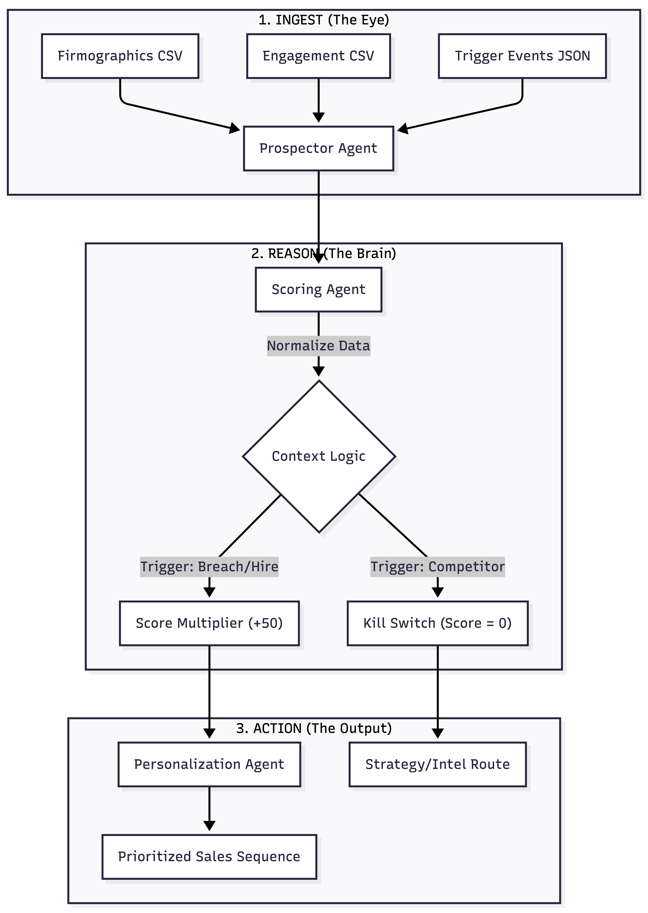
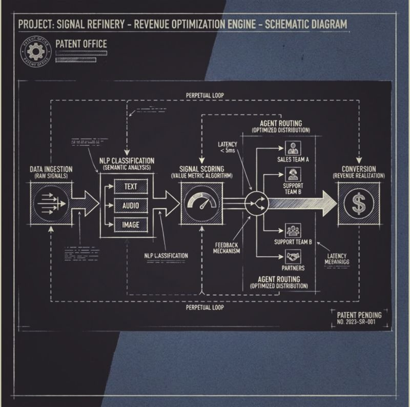
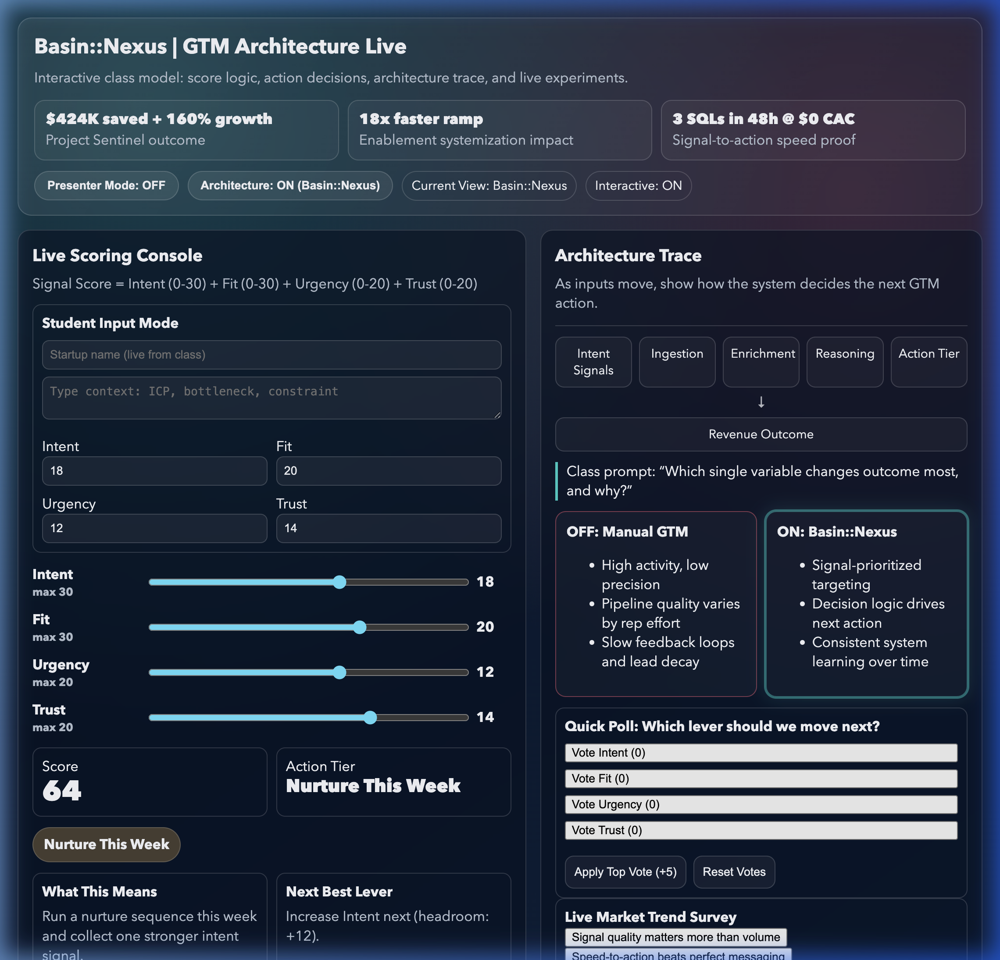

Operator Journal
The writing matters because founders, CEOs, and hiring teams can inspect how I frame systems, tradeoffs, and execution before we ever get on a call.
Open Writing Hub →I fix messy sales pipelines and build the systems behind them. That means routing logic, CRM infrastructure, lifecycle automation, enrichment flows, and AI-assisted workflows that improve pipeline quality, signal clarity, and revenue execution. The architecture matters, but the outcome should feel boringly practical: fewer leaks, cleaner handoffs, and a go-to-market motion the team can trust.
Hiring manager: start with the resume. Founder or CEO: use the intro path. Want proof first: review the case studies. Direct line: lbasin23@gmail.com
The difference is not that I talk more strategy. The difference is that I can diagnose the commercial problem, redesign the workflow, and wire the execution layer that makes the fix real.
Typical candidateGood at diagnosis, decks, dashboards, or recommendations.
MeI turn the diagnosis into routing logic, CRM changes, automation, and measurable operating behavior.
Typical candidateSees sales, ops, marketing, and systems as separate functions.
MeI work across GTM, RevOps, product, and engineering so the handoffs, data, and ownership model line up.
Typical candidateMeasures the funnel after it breaks.
MeI rebuild the execution layer underneath it so the funnel routes cleaner, converts better, and becomes easier to trust.
I build the GTM layer that improves execution quality, speed, and signal clarity before the answer becomes hiring more people into broken process.
I work best where sales, RevOps, product, and technical teams need one shared system instead of four different interpretations of the same problem.
You should not have to guess whether someone can build. Review the case studies, inspect the systems, and decide whether the work holds up.
Selected outcomes across Google, SurveyMonkey, Sense, Fudo Security, and founder-led systems work from 2010 to 2025. Metrics span revenue impact, operating savings, and technical build depth. $40M+ and project-level case metrics are tracked in internal Google Sheets and Google Docs operating artifacts.
Built a lead-to-opportunity engine that scaled pipeline to 160% YoY. Replaced manual SDR work with cleaner qualification, routing, and operating visibility.
Architected AI-native execution engines, including predictive technical sales loops, B2B intent automation, and founder-facing operating models.
Owned global revenue systems and outreach architecture. Unified fragmented data layers into one operating view for BD leadership and execution teams.
Built enterprise discovery workflows for F500 accounts and created technical outreach standards teams could reuse, teach, and improve.
Worked inside high-scale internal systems focused on data quality, operational uptime, and process reliability.
Business, operations, and leadership fluency.
Operator systems, lecture models, and decision tools built to be used, not just admired.
Cybersecurity and storytelling practice that sharpens how complex ideas land.
If someone says they build GTM systems, you should be able to inspect the work. This library shows the interfaces, logic models, lecture models, and operator artifacts behind the way I turn messy go-to-market motion into cleaner routing, stronger signal, and more usable execution.

Python-native telemetry for real-time intent extraction and cognitive signal routing across the GTM stack.

Engineering schematics for decision-tree automation and routing.

The patented logic framework for signal-to-pipeline conversion.

Interactive class model for score logic, action decisions, architecture trace, and live experiments.

Orchestrating the agents of revenue. Simplifying the complex into deterministic scale.
Architectural spec built to align operators, engineers, and leadership around one routing model. [Protected Deliverable: Requires Passcode]
Working pilots and teachable prototypes that show how I pressure-test new GTM logic before it hardens into a longer-term operating model.
Intent extraction and partner infrastructure for GTM agencies moving from manual qualification to cleaner signal routing.See Case Study Layer →
Follow-up engine for technical sales training, retention, and stronger coaching loops after the first meeting.See Case Study Layer →
Interactive lecture model for teachable GTM architecture, live decision practice, and executive-facing system explainability.View Live Demo →
These are not resume bullets. They are compact operating stories that show how I diagnose system failure, design a response, and improve the motion without losing the humans inside it.
Project-level metrics below are sourced from internal operator telemetry (Google Sheets pipeline tracking and Google Docs execution logs).
Audit funnel stages, instrument core metrics, map routing and handoff failures, and publish a baseline system scorecard.
Ship high-impact fixes: routing logic, qualification workflow updates, and SLA visibility to reduce leakage and manual load.
Scale winning playbooks, train team owners, and lock an operating cadence tied to pipeline quality and conversion velocity.
The writing matters because founders, CEOs, and hiring teams can inspect how I frame systems, tradeoffs, and execution before we ever get on a call.
Open Writing Hub →The frameworks are reusable decision tools for routing, signal quality, and execution design. They are built to help teams understand the logic clearly enough to adopt it, improve it, and run it well.
Browse Frameworks →Some of this work also shows up in teaching contexts. The lecture models and live architecture demos reflect the same standard I use in operator work: make complex systems legible enough to teach, pressure-test, and apply.
View GTM Architecture Live →The public writing layer is split by function: security revenue systems notes, operator memos, leadership writing, external recognition, and the reusable framework library behind the work.
Revenue systems for Security leaders.
LinkedInSignals, systems, and market analysis.
SubstackNavigate your career with business acumen and innovative strategy.
LinkedIn NewsletterIncluded in Thomas Allgeyer's Best of LinkedIn GTM report for practical thinking on systems, ownership, and execution.
See RecognitionSignal Ops and GTM frameworks.
Framework Library